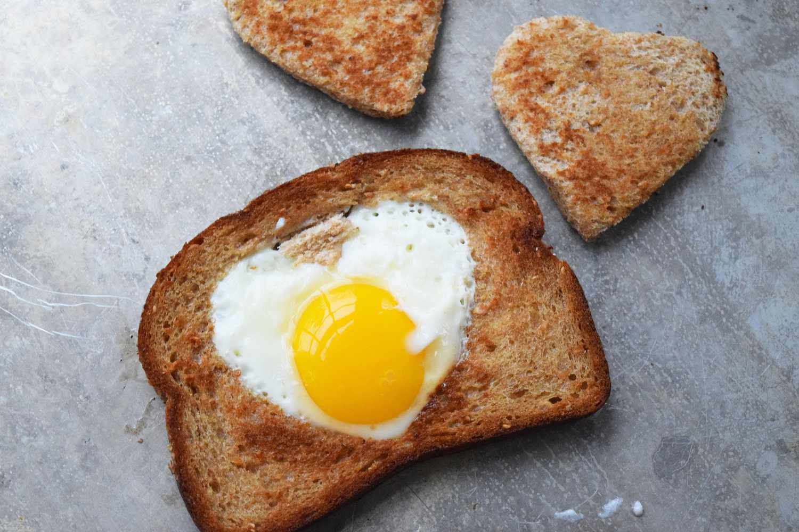

Bread Egg

Description:
This is a unique dish that involves cooking an egg within a slice of bread.
Ingredients:
Steps:
- Begin heating the pan and add oil.
- Cut a hole into a slice of bread, and place both the slice and the cutout into the pan.
- Crack an egg into the hole in the slice. As both sides cook add the cheese.